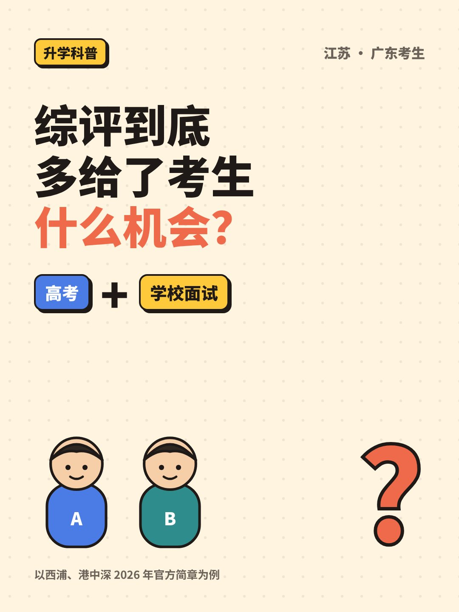
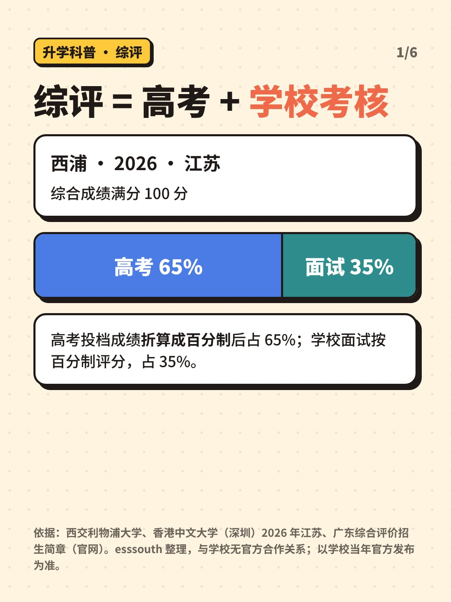
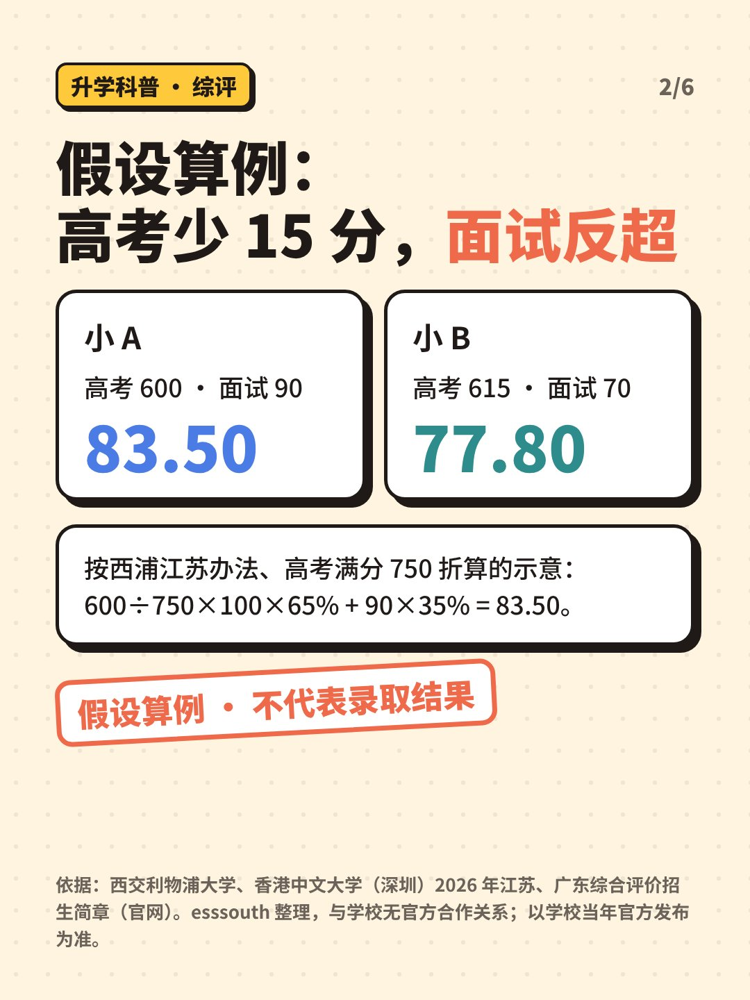
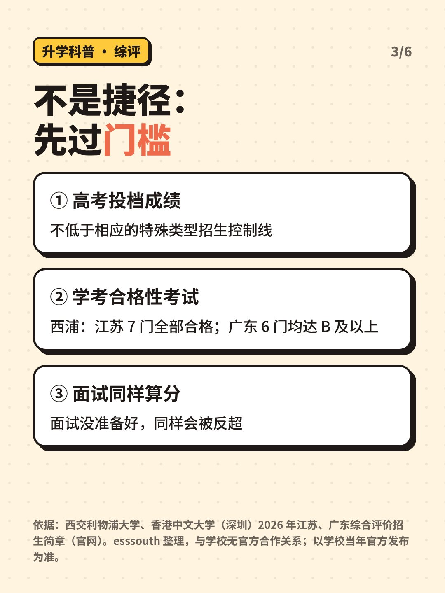
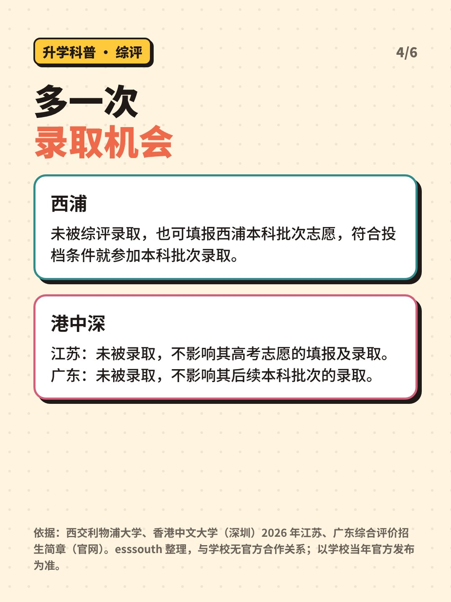
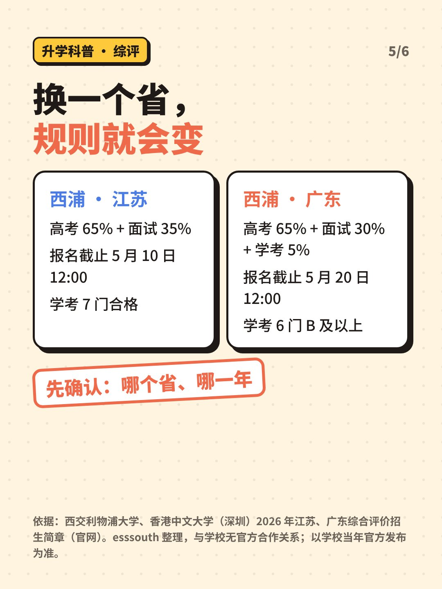
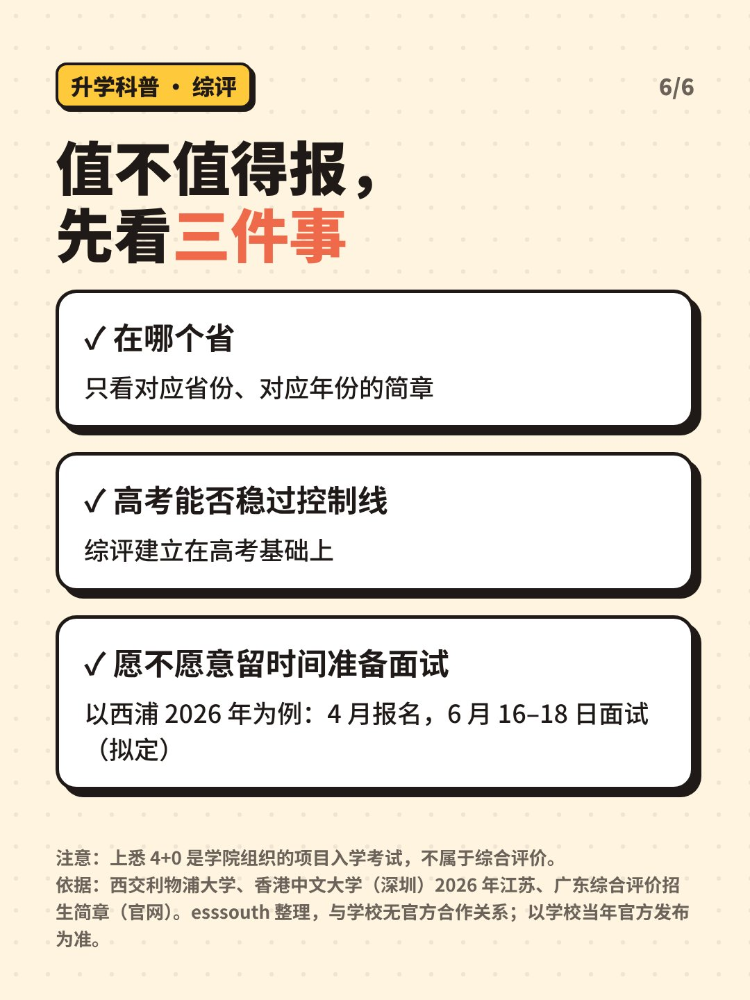

<title>综评到底多给了考生什么机会</title>
<meta name="claude:viewport-fit-sides" content="cover">
<link rel="stylesheet" href="https://fonts.googleapis.com/css2?family=Noto+Sans+SC:wght@500;700;900&display=swap">
<style>
/* Layout: one column — the vertical video first (player + version switch), then the cover and six summary cards, then notes.
   Same graphic language as the video: cream ground, ink outlines, offset shadows. */
:root{
  --bg:#FFF4E0; --paper:#FFFFFF; --ink:#1F1A17; --muted:#6B6259; --accent:#EF6A4B; --yellow:#FFC93C;
  --font:"Noto Sans SC","PingFang SC","Microsoft YaHei",system-ui,sans-serif;
}
@media (prefers-color-scheme: dark){:root:not([data-theme="light"]){--bg:#1C1916; --paper:#26221E; --ink:#F3EAD9; --muted:#B9AE9F; --accent:#F58466; --yellow:#E8B735; color-scheme:dark}}
:root[data-theme="dark"]{--bg:#1C1916; --paper:#26221E; --ink:#F3EAD9; --muted:#B9AE9F; --accent:#F58466; --yellow:#E8B735; color-scheme:dark}
body{background:var(--bg);color:var(--ink);font-family:var(--font);font-size:16px;line-height:1.6}
main{max-width:980px;margin:0 auto;padding-block:28px 56px;padding-left:max(16px,env(safe-area-inset-left,0px));padding-right:max(16px,env(safe-area-inset-right,0px));display:grid;gap:36px}
h1{margin:0;font-size:clamp(28px,5vw,42px);font-weight:900;line-height:1.2;text-wrap:balance}
h1 em{font-style:normal;color:var(--accent)}
h2{margin:0;font-size:22px;font-weight:900}
.tag{display:inline-block;background:var(--yellow);color:#1F1A17;border:3px solid var(--ink);border-radius:12px;padding:2px 12px;font-weight:900;font-size:14px}
.lead{margin:0;color:var(--muted);max-width:40em}
.watch{display:grid;grid-template-columns:minmax(0,420px) minmax(0,1fr);gap:28px;align-items:start}
.player{display:grid;gap:12px}
video{width:100%;max-width:100%;aspect-ratio:9/16;background:#000;border:4px solid var(--ink);border-radius:22px;box-shadow:8px 8px 0 var(--ink);display:block}
.seg{display:inline-flex;border:3px solid var(--ink);border-radius:999px;overflow:hidden;background:var(--paper);justify-self:start}
.seg button{border:0;background:transparent;color:var(--ink);font:inherit;font-weight:700;font-size:14px;padding:8px 16px;cursor:pointer;min-height:40px}
.seg button[aria-pressed="true"]{background:var(--ink);color:var(--bg)}
.seg button:focus-visible{outline:3px solid var(--accent);outline-offset:-3px}
.info{display:grid;gap:14px;min-width:0}
.box{background:var(--paper);border:3px solid var(--ink);border-radius:18px;padding:16px 18px;display:grid;gap:6px}
.box b{font-size:16px}
.box p,.box li{margin:0;font-size:14.5px;color:var(--muted)}
.box ul{margin:0;padding-left:18px;display:grid;gap:4px}
.cards{display:grid;grid-template-columns:repeat(auto-fill,minmax(150px,1fr));gap:14px}
.cards figure{margin:0;display:grid;gap:6px}
.cards img{width:100%;aspect-ratio:3/4;object-fit:cover;border:3px solid var(--ink);border-radius:14px;display:block}
.cards figcaption{font-size:13px;color:var(--muted)}
.foot{font-size:13px;color:var(--muted);border-top:2px dashed var(--muted);padding-top:14px}
@media (max-width:760px){.watch{grid-template-columns:minmax(0,1fr)}.player{max-width:420px;margin:0 auto;width:100%}}
</style>

<main>
  <header style="display:grid;gap:10px">
    <span class="tag" style="justify-self:start">升学科普 · 视频 demo</span>
    <h1>综评到底多给了考生<em>什么机会</em>？</h1>
    <p class="lead">面向江苏、广东的学生和家长，竖屏，1 分 59 秒。本版没有配音，讲解以画面字幕呈现。</p>
  </header>

  <section class="watch" aria-label="视频">
    <div class="player">
      <video id="v" controls playsinline preload="metadata" poster="poster.jpg" src="video-music.mp4"></video>
      <div class="seg" role="group" aria-label="版本">
        <button type="button" id="b-music" aria-pressed="true">有背景音乐</button>
        <button type="button" id="b-plain" aria-pressed="false">无背景音乐</button>
      </div>
    </div>
    <div class="info">
      <div class="box"><b>讲了什么</b>
        <ul>
          <li>综评多给的第一样：高考之外，一块学校考核的分数（西浦江苏：高考 65% + 面试 35%）</li>
          <li>假设算例：高考少 15 分，面试把差距反过来（83.50 对 77.80）</li>
          <li>不是捷径：要先过特殊类型招生控制线，面试没准备好也会被反超</li>
          <li>第二样：多一次录取机会，没被综评录取不影响后面的批次</li>
          <li>换一个省规则会变；值不值得报，先看三件事</li>
        </ul>
      </div>
      <div class="box"><b>三处真实产品画面</b>
        <p>计算器算出两组分数 · 江苏切到广东看比例和日期 · 练习里补上理由看反馈。都是网页测试版的真实界面录制，只加了点击圈和放大。</p>
      </div>
      <div class="box"><b>依据</b>
        <p>西交利物浦大学、香港中文大学（深圳）2026 年江苏、广东综合评价招生简章（官网），2026-11-18 重新核对。2027 年简章发布后需更新。</p>
      </div>
    </div>
  </section>

  <section style="display:grid;gap:14px" aria-labelledby="cards-h">
    <h2 id="cards-h">封面与总结图</h2>
    <div class="cards">
      <figure><figcaption>封面</figcaption></figure>
      <figure><figcaption>1 · 综评是什么</figcaption></figure>
      <figure><figcaption>2 · 假设算例</figcaption></figure>
      <figure><figcaption>3 · 门槛</figcaption></figure>
      <figure><figcaption>4 · 多一次录取机会</figcaption></figure>
      <figure><figcaption>5 · 省份差异</figcaption></figure>
      <figure><figcaption>6 · 先看三件事</figcaption></figure>
    </div>
  </section>

  <p class="foot">esssouth 根据学校公开简章整理，与学校无官方合作关系；算例为假设，不代表录取结果；一切以学校当年官方发布为准。</p>
</main>

<script>
(() => {
  const v = document.getElementById('v'), bm = document.getElementById('b-music'), bp = document.getElementById('b-plain');
  function pick(music) {
    const t = v.currentTime || 0, playing = !v.paused;
    v.src = music ? 'video-music.mp4' : 'video-plain.mp4';
    bm.setAttribute('aria-pressed', String(music)); bp.setAttribute('aria-pressed', String(!music));
    v.addEventListener('loadedmetadata', () => { v.currentTime = t; if (playing) v.play().catch(() => {}); }, { once: true });
  }
  bm.addEventListener('click', () => pick(true));
  bp.addEventListener('click', () => pick(false));
})();
</script>
